Kryvyi Rih
Art space “Bombik”: culture in a Kryvyi Rih bomb shelter
A group of volunteers who put on evenings of theatre, music and poetry and collected donations for the Ukrainian army.
The Bombik art space is currently closed and no new events are taking place.
“Better bomb shelters turned into theatres than theatres turned into bomb shelters”
Andrii Bohun, interview with Ukrainskyi Pivden
Culture and art
Plays, concerts and poetry evenings in a bomb shelter
Moral support
Evenings out for local people and for those who had to leave their homes
Help for our soldiers
Entry was free, and the donations went to the army
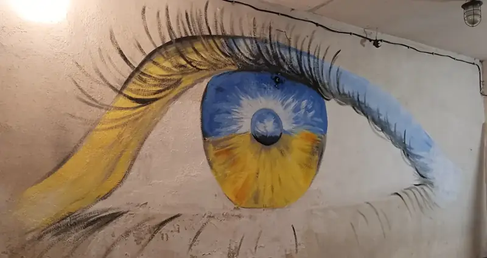
What it added up to
- 15+events held
- 30+artists and performers took part
- 500+people came to watch
- 30,000+hryvnias raised for the army
Our events
Photos and notes from past plays, concerts and evenings in our shelter.
-
No. 01
Solo show “And Where Am I?”
solo show, first part of a series of monologues on identity
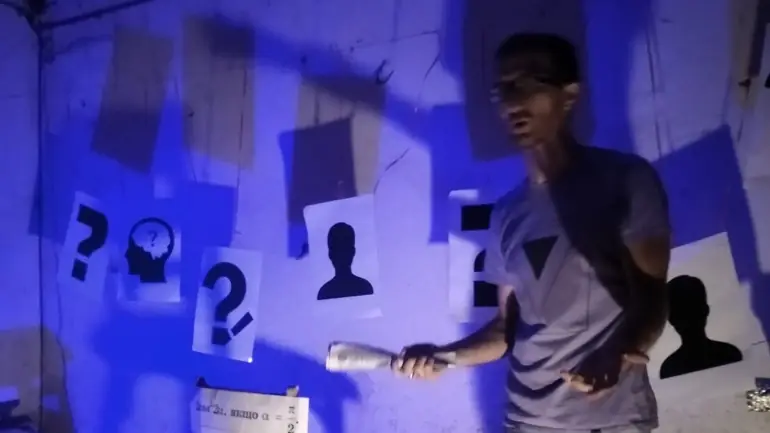
-
No. 02
Poetry evening with Ihor Bardatskyi
patriotic poetry evening
Raised UAH 1,720
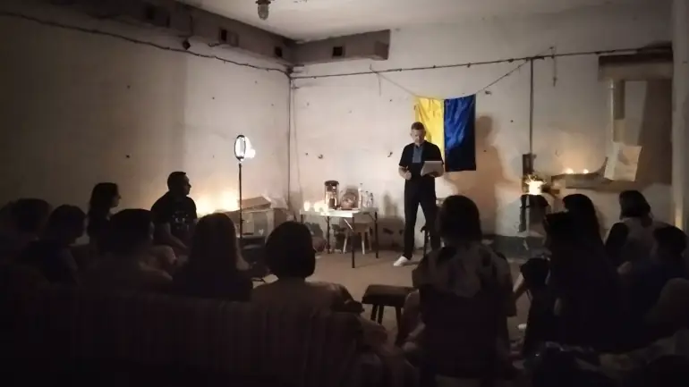
-
No. 03
Solo show “VodnOchAs”
solo show
Raised UAH 1,970
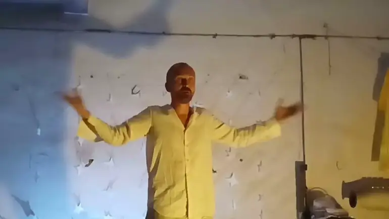
-
No. 04
“Improvisation” show
music set and interactive show
Raised UAH 2,205
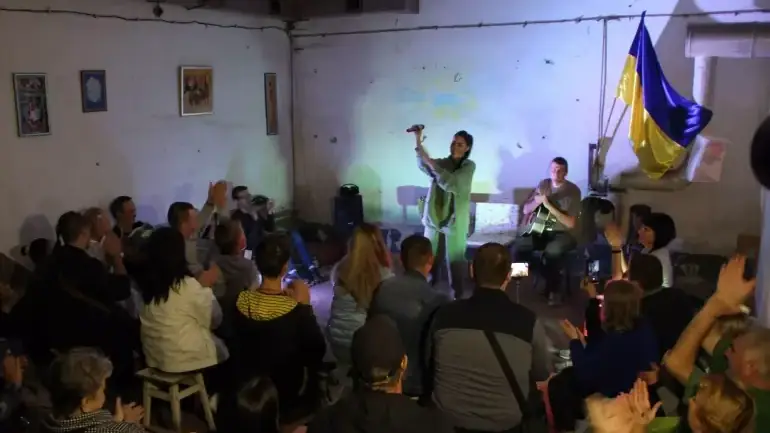
-
No. 05
Concert “Music Smoothie”
live music concert
Raised UAH 1,977
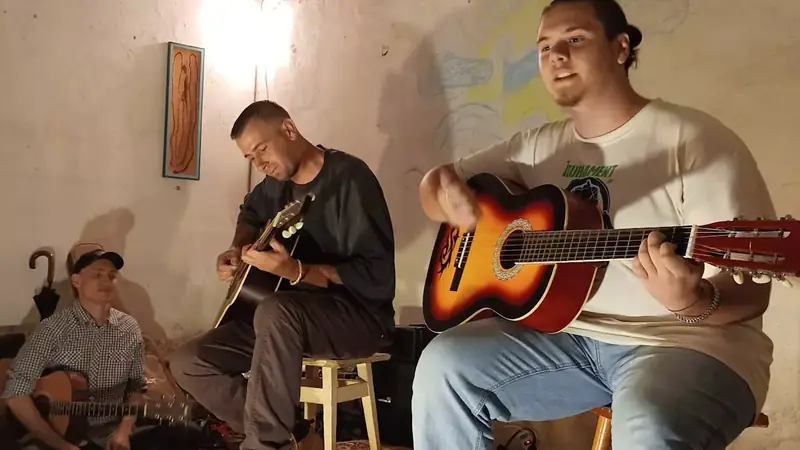
-
No. 06
Solo show “An Eye for an Eye”
solo show about the war, our sixth event
Raised UAH 2,410
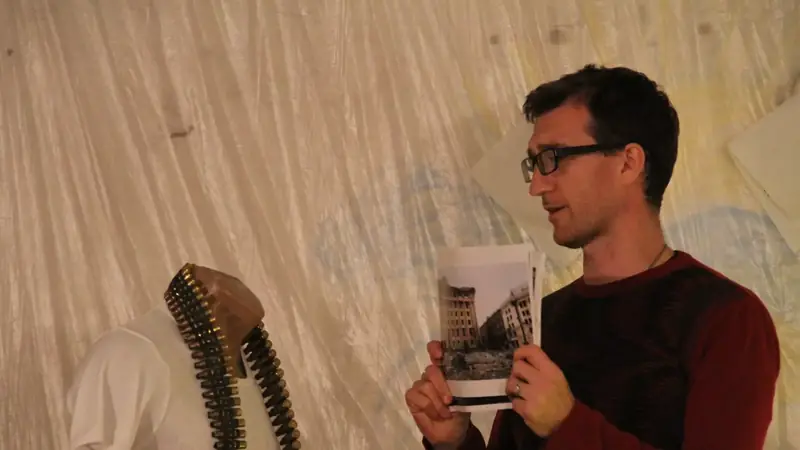
-
No. 07
“Creative Assortment” evening
evening of music, improv and humour
Raised UAH 2,490
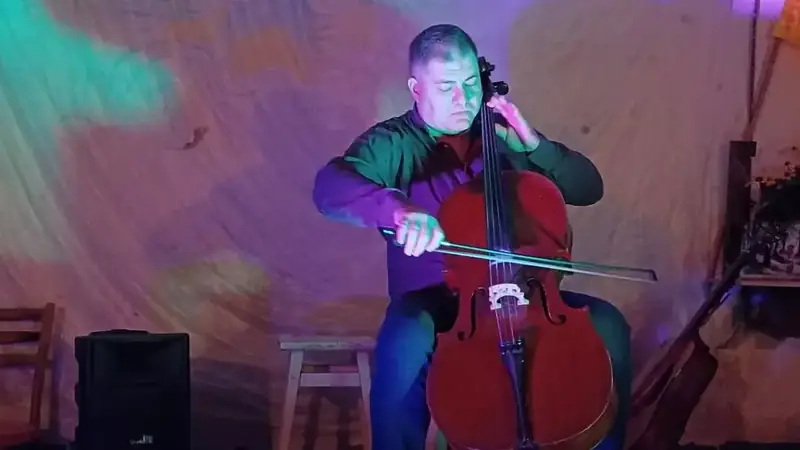
-
No. 08
Poetry evening “The Wounded Muse”
poetry evening with an open mic for the audience
Raised UAH 1,520
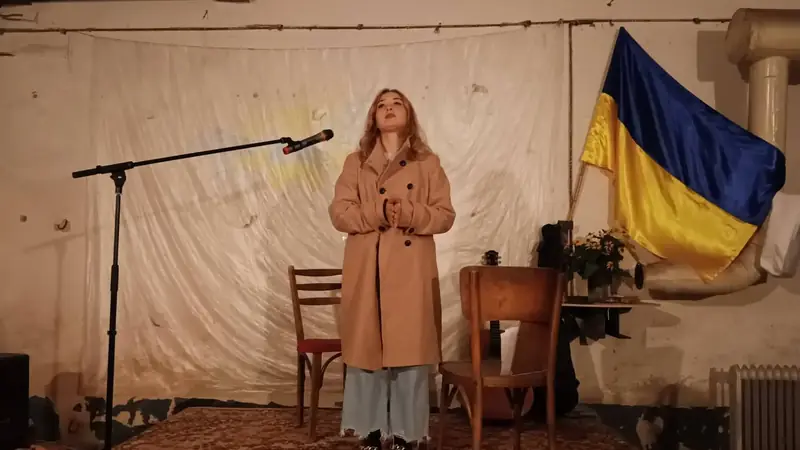
-
No. 09
BABY theatre puppet show
puppet show for children
Raised UAH 1,735
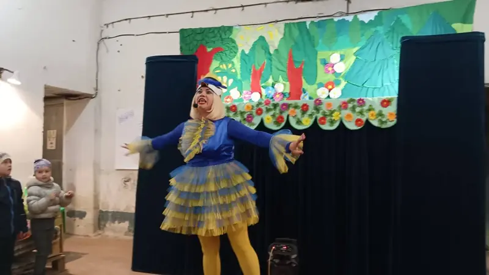
-
No. 10
“Anti-Halloween” evening
mime programme and live music
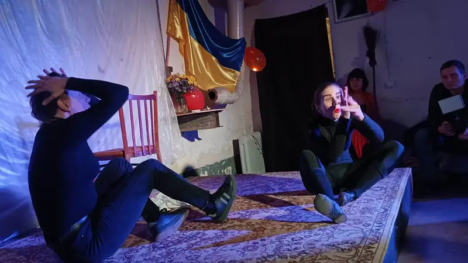
-
No. 11
Guitar, violin, cello, voice
music evening
Raised UAH 1,530
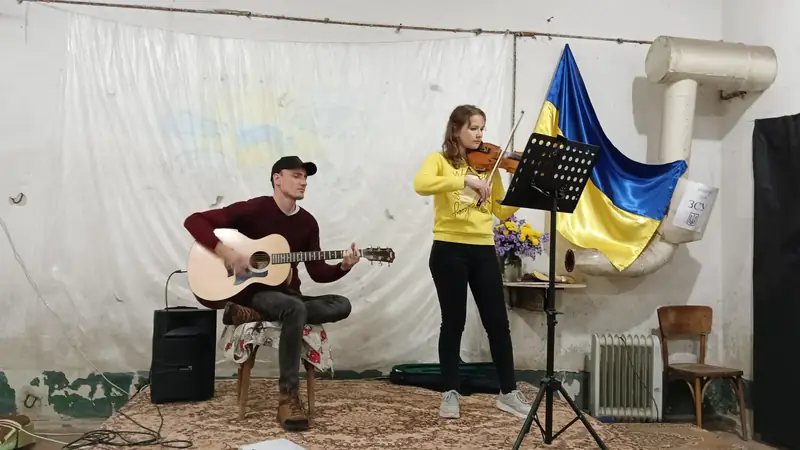
-
Hall
Photos of the Bombik art space
the mural, the paintings, the photo installation and the hall of the shelter
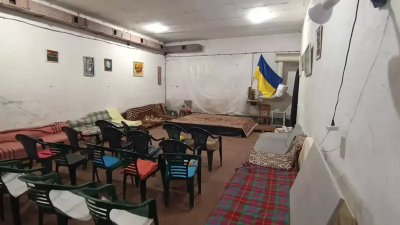
Who we are
Kryvyi Rih is a mining town, and people tend to stop there when they describe it. It’s also full of people who act, sing and write poems, and some of them ended up performing in a bomb shelter. Here’s how that happened.

Most of you have sat in a dark theatre at some point, felt that little shiver before the start, and clapped hard at the end. Now try to guess the oddest place you could stage a play. You won’t get it, so we’ll tell you: a bomb shelter.
Denys Chyhirov, one of our organisers, had wanted to open a place for people to enjoy culture for a long time. He even entered a proposal for an art space in Shakhtarskyi Park, but it didn’t get through the competition. After the war started, Pavlo Osikov, an actor well known in the city, called to ask if he had a room for shows. Denys went through a few options and remembered that Svitlana Ostapchuk, a very active head of a homeowners’ association, had a bomb shelter in her care.
Svitlana said yes, Pavlo liked the idea, and after some preparation the first show went ahead. Solo shows, concerts, poetry evenings, improv and puppet shows for children followed.
The Bombik art space is currently closed and no new events are taking place.
Questions people ask
Is Bombik still open?
No. The art space is currently closed and no new events are taking place. This site keeps the photos and stories from past evenings.
Where was it?
In Kryvyi Rih. The events took place in a bomb shelter.
How much did it cost to get in?
Nothing. Entry was free and people left donations. All of the money went to support the Armed Forces of Ukraine.
Why a bomb shelter?
We picked a proper bomb shelter so people could have an evening out even when the sirens went off.
Where did the donations go?
To the army’s needs. We raised more than UAH 30,000 in total, and each event page gives the sum for that night. “An Eye for an Eye” brought in UAH 2,410, for example, and “Creative Assortment” UAH 2,490.
Were there events for children?
Yes. The BABY puppet theatre performed here, for one, and the shelter had never heard so many kids.